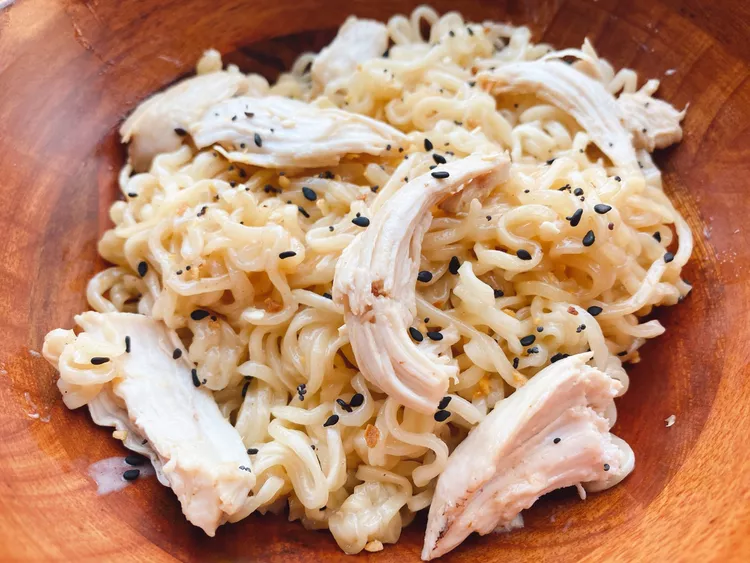

Creamy Ramen Noodles
Home

an easy and delicious way to try something new with your package of ramen noodles
combine ramen noodles with chicken, seasoning, and cream to make a brand new dish
Ingredients
- 1 tablespoon unsalted butter
- 2 cloves garlic, minced
- 1/2 cup chicken broth
- 1/2 cup whipping cream
- 1 (3 ounce) package ramen noodles
- 1 teaspoon reduced-sodium soy sauce
- 1/4 cup chopped cooked chicken
- 1 pinch everything bagel seasoning (optional)
Instructions
- Melt butter in a heavy skillet over medium heat
- Add minced garlic and cook, stirring, until fragrant, about 30 seconds
- Add chicen broth, cream, and ramen noodles. Cook, stirring occasionally, until noodles soften, about 3 minutes
- Add soy sauce and chopped cooked chicen. Allow to get hot
- Serve garnished with everything bagel seasoning if desired